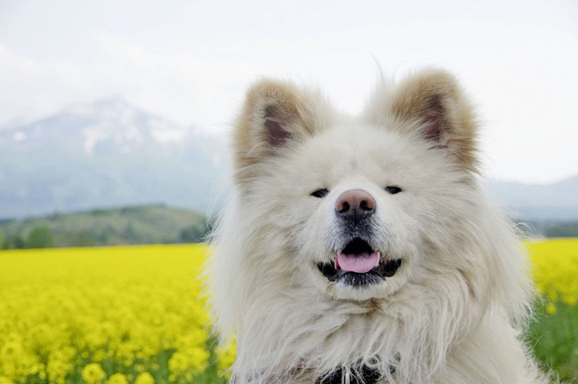
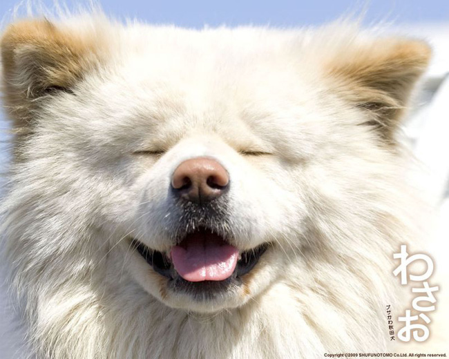
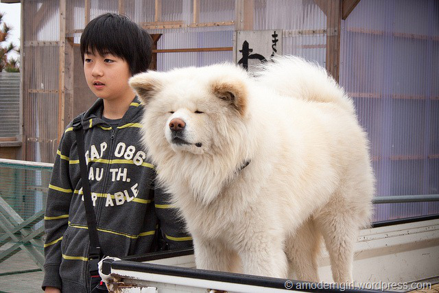
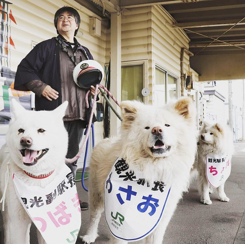

Wasao - chú chó lông dài nổi tiếng, từng là đại sứ du lịch Nhật Bản, trưởng ga tàu đã qua đời ở tuổi 13
lebv - ngày 27/06/2021
Wasao đã lặng lẽ ra đi trong bệnh viện thú y vào ngày 8/6.
Theo Japantoday đưa tin, Wasao, một chú chó Akita nổi tiếng của Nhật Bản vì ngoại hình độc đáo đã qua đời ở tuổi 13, tương đương với độ tuổi 90 của con người vào thứ Hai ngày 8/6.
Wasao có bộ lông xù trắng muốt, khuôn mặt ngây thơ đáng yêu nên được rất nhiều người yêu quý. Chú chó này được người dân địa phương gọi là "busa kawaii", trong tiếng Nhật có nghĩa là "xấu xí" và "dễ thương".
Wasao từng bị bỏ rơi ở thị trấn Ajigasawa, tỉnh Aomori. Chú được một người dân địa phương nhận nuôi vào năm 2007 trước khi trở thành một ngôi sao trên truyền hình.
Cuộc đời của Wasao đã được sản xuất thành phim vào năm 2011. Wasao đã thủ vai chính trong phim và kể lại cuộc đời của chính mình. Sau khi bị chủ cũ bỏ rơi, Wasao dường như mất hết niềm tin vào con người. Chú đi lang thang khắp Tokyo và di chuyển đến vùng núi Ajigasawa, Aomori xa xôi, hiểm trở. Tại đây, định mệnh đã sắp đặt khiến cho Wasao gặp Setsuko, chủ một cửa hàng tạp hóa.
Nhiều chuyện sau đó xảy ra khiến cho Wasao dần tin tưởng và thân thiết với Setsuko cũng như người dân nơi đây. Cuối cùng, chú đã tìm được gia đình thực sự của mình và sống vui mãi về sau.
Bộ phim đã đưa tên tuổi của Wasao đi khắp nơi. Chú chó lông dài Wasao trở thành "ngôi sao nổi tiếng" và được săn đón khắp nơi. Chú trở thành biểu tượng trên mạng xã hội, xuất hiện liên tục trên truyền hình và thậm chí còn tham gia gameshow.
Tháng 6/2010, Wasao chính thức trở thành Đại sứ du lịch của Ajigasawa. Wasao từng tới thăm các khu vực bị tàn phá bởi trận động đất và sóng thần vào tháng 3 năm 2011 và phục vụ với tư cách là trưởng ga tàu du lịch Ajigasawa.
Wasao cũng có một gia đình hạnh phúc của riêng mình. Tsubaki, vợ của Wasao, giữ chức phó trưởng ga tàu, còn con gái Chome là thực tập sinh du lịch tại nhà ga.
Nhóm hỗ trợ có tên là Dự án Wasao cho biết chú chó lông dài dễ thương này gặp vấn đề sức khỏe vào khoảng tháng Tư. Lúc này chú không thể tự đứng vững và tình trạng đã trở nên xấu đi nhanh chóng vào Chủ nhật vừa rồi.
Ông Tadamitsu Kikuya, 55 tuổi, chủ của Wasao, cho biết: "Cảm ơn vì tất cả mọi thứ. Tôi cảm thấy tự hào vì là gia đình của Wasao."
Dự án Wasao đang lên kế hoạch tổ chức một sự kiện chia tay chú chó đáng yêu này.
Theo: Japantoday
Tin Xem Nhiều
- >> Kinh hoàng vụ bầy chó dữ cắn chết người phụ nữ đang đi đường
- >> Chú chó Shiba bán khoai lang nướng từng gây bão MXH thế giới đã qua đời
- >> Cô gái bật khóc nức nở khi nhìn thấy hình ảnh chú chó cưng đã qua đời xuất hiện giữa trời mây
- >> Sự thật bất ngờ về nhân vật "thầy chùa ăn thịt chó" xuất hiện trên Youtube
- >> Chú chó du lịch khắp các bãi biển miền Nam
- >> Bất ngờ với những lợi ích tuyệt vời của việc nuôi chó